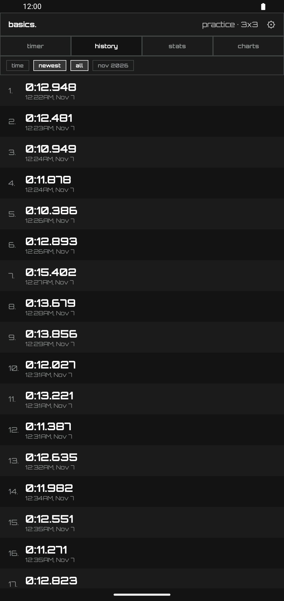
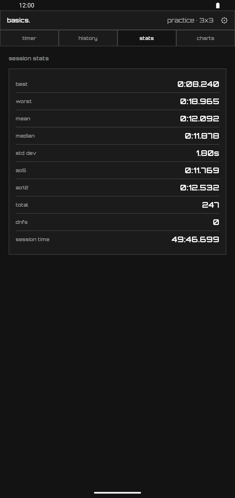
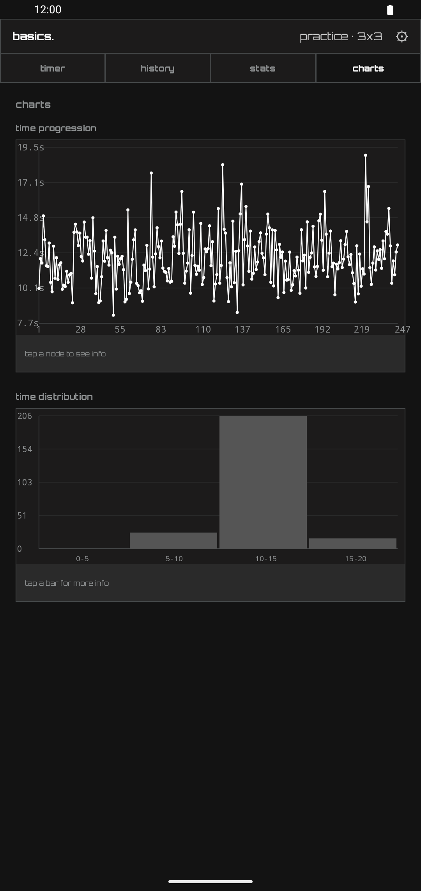

basics.
an offline 3×3 speedcubing timer for android.
i built basics. to get back to what i enjoy about speedcubing: scramble, solve, repeat.

practice with 3×3 scrambles and optional 15-second inspection.
after the solve

revisit your times, scrambles, and penalties.

check personal bests and rolling averages like ao5 and ao12.

see how your times change and where most solves land.